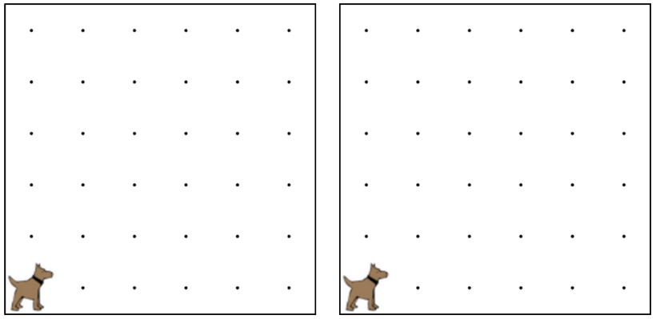

Write a program to have karel spin in 8 circles.
This means karel is going to need to turn left 32 times.
You must use a for loop in this program.
編寫一個程序，有卡雷爾旋在8圈。這意味著卡雷爾是將需要左轉32次。你必須使用的循環此計劃。

for(var i = 0; i < COUNT; i++){ 對於（可變 i = 0; i < 算; i++){
/* Repeat code betweeen 之間的重複代碼
* brackets COUNT times */ 括號算時
}
/* Move ten times */ 移動十次
for(var i = 0; i < 10; i++){ 對於（可變 i = 0; i < 10; i++){
move(); 移動（）;
}
// For loops can have multiple lines in them!
for(var i = 0; i < 5; i++){ 對於（可變 i = 0; i < 5; i++){
move(); 移動（）;
putBall(); 放球（）;
}